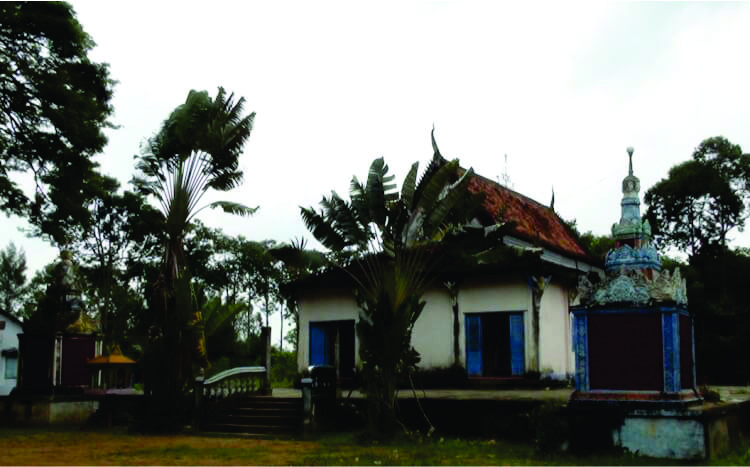
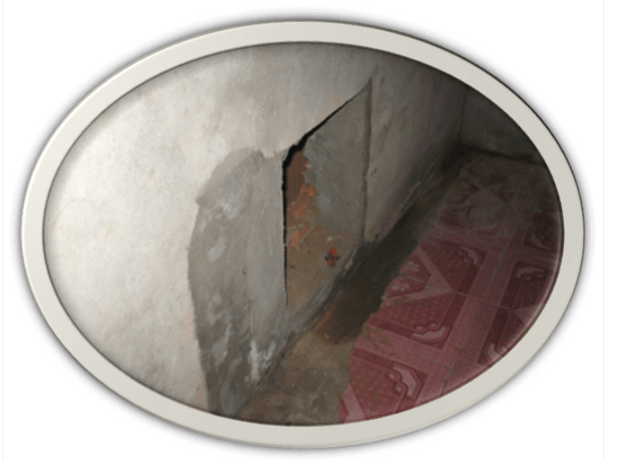
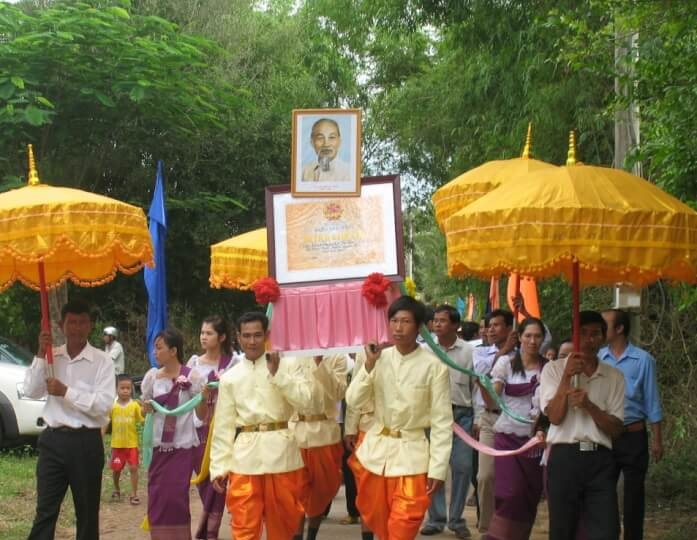

Di tích chùa Teakhinasakor Ta Lôn tọa lạc cách thành phố Trà Vinh khoảng 75km về hướng Nam, cách trung tâm huyện Duyên Hải khoảng 18km về hướng Đông Nam thuộc ấp Cái Cối, xã Long Vĩnh, huyện Duyên Hải, tỉnh Trà Vinh.
Ngôi chùa được xây dựng vào năm 2360 Phật lịch tức năm 1816 dương lịch trong khuôn viên rộng 34.930m2
Trong những năm kháng chiến, ngôi chùa không chỉ là cơ sở hoạt động bí mật, địa điểm nuôi chứa, bảo vệ cán bộ cách mạng mà còn là nơi xuất phát nhiều phong trào đấu tranh chính trị.
Khi Chi bộ xã Long Vĩnh thành lập (04/9/1933), Chi bộ đã bàn với sư cả Triệu Minh Tên chọn chùa làm cơ sở nuôi chứa cán bộ và mở các lớp học cho sư sãi, con em trong vùng do sư Ngô Lâm Lẻ, sư Ngô Lâm Tỉnh giảng dạy...
Năm 1943, nghi ngờ nhà chùa là cơ sở của cách mạng, địch tiến hành lục soát nhưng không phát hiện được gì, chúng tức giận cho đốt cháy ngôi chánh điện cùng tăng xá. Những năm sau Cách mạng Tháng 8/1945, nhà chùa đã nuôi chứa, bảo vệ các cán bộ bám trụ hoạt động như: Ông Maha Sơn Thông, Thạch Thiện Chí, Thạch Thanh, Thạch Sa Bút, Trần Lái, Hứa Minh Ngàn, Hứa Thành Công... Năm 1948, ngôi chùa một lần nữa bị địch đến lục soát và đốt ngôi chính điện.
Năm 1953, sư Sơn Hiến là thành viên của Ban Tăng sự yêu nước huyện Trà Cú được cử về trụ trì chùa. Một số vị sư của chùa lần lượt hoàn tục và tham gia cách mạng như: Phan Chane, Thạch Huôl, Phan Lê, Thạch Phan Suôl, Trầm Hồng Sang, Hồng Văn Sai, Kiên Piếu, Phan Văn Hiếu, Phan Văn Chánh, Ngô Văn Miên, Huỳnh Văn Trừ, Huỳnh Văn Phải, Phan Văn Ngãnh.
Sang thời kỳ chống Mỹ, Ban Tăng sự yêu nước huyện Trà Cú cử thầy giáo Trầm Chại đến chùa mở lớp dạy học đồng thời triển khai các tài liệu của Đảng. Các vị sư chùa Ta Lôn bất chấp khó khăn, nguy hiểm tổ chức nuôi chứa cán bộ ngay tại phòng riêng của mình. Nhiều đồng chí như: Đỗ Công Lao, Thạch Phan Suônl, ông Phan Lê, Hứa Văn Sang, Ngô Thành Ngữ, Lâm Văn Các, Phạm Văn Ửng, Hồng Văn Sai, Huỳnh Văn Núi, Huỳnh Văn Phải…đã được nhà chùa nuôi chứa, bảo vệ an toàn.
Năm 1959, địch vào chùa bắt sư cả Sơn Hiến và 04 vị sư cùng 03 phật tử. Ngay sau đó các sư sãi cùng hàng trăm phật từ kéo đến nhà tên trưởng ấp Phan Văn Nhì đấu tranh.
Tháng 5/1960, đồng chí Tư Râu đến chùa nắm tình hình tiêu diệt đồn Kinh Đào không mai bị địch phát hiện đưa quân bao vây, lục soát. Sư cả Sơn Hiến đưa đồng chí Tư Râu xuống hầm bí mật ở chính điện ẩn náo an toàn.
Lối vào hăm bí mật dưới bệ tượng phật lớn bên trong chính điện
Cuối năm 1960, tại sân chùa Ta Lôn, Mặt trận Dân tộc Giải phóng xã Long Vĩnh được thành lập và ra mắt trước hơn 500 đại biểu quần chúng. Trong buổi lễ có hơn 20 vị sư đã hoàn tục tình nguyện tham gia kháng chiến.
Năm 1962, cơ sở cách mạng tại chùa do sư cả nhì Sơn Cương đảm trách, nhiều vị sư như: Sư Trầm Văn Nho, Trần Văn Hương, Thạch Phanh, Lâm Hoàng Rây, Ngô Văn Thèm, Ngô Văn So, Hà Trùng Bồi được kết nạp vào Đảng và Chi bộ xã Long Vĩnh công nhận đây là một tiểu tổ Đảng do sư cả nhì Sơn Cương lãnh đạo.
Tháng 02/1962, địch bỏ thuốc độc vào nguồn nước ngọt làm chết 02 trẻ em và 01 vị sư chùa Ta Lôn. Sau đó 06 vị sư của chùa là Sơn Cương, Trần Văn Hương, Thạch Phanh, Lâm Hoàng Rây, Tăng Song, Thạch Rẹm cùng lực lượng các nơi khác xuống đường biểu tình tại tỉnh lỵ và bị bắt giam tại chùa Kom Pong Ksanl.
Tháng 5/1964, địch cho máy bay, tàu chiến ném bom, nả pháo vào chùa làm ông Sơn Rượng chủ chùa chết, 08 phật tử bị thương. Ngôi tha la bị cháy rụi và chánh điện bị sụp đỗ một phần. Cũng trong năm này, Tỉnh hội Sư sãi yêu nước mở lớp bồi dưỡng kiến thức và đẩy mạnh kế hoạch binh vận, sãi vận tại chùa có trên 40 vị sư trong tỉnh đến tham dự.
Ngày 22/02/1966, 18 vị sư và hơn 100 phật tử của chùa kéo ra Cái Đôi đấu tranh chống lại việc địch sử dụng thuốc khai hoang và chất độc da cam.
Trong chiến dịch Hồ Chí Minh Chi lịch sử chùa Ta Lôn là nơi hội họp của Chi bộ xã Long Vĩnh để triển khai kế hoạch. Các vị sư của chùa không ngừng nắm bắt tin tức, báo cáo cho cán bộ cách mạng đánh tiêu diệt đồn Kinh Đào, tề xã Long Vĩnh.
Ngày 18/4/2013, Bộ Văn hóa, Thể thao và Du lịch ban hành Quyết định số 1457/QĐ-BVHTTDL công nhận chùa Teakhinasakor Ta Lôn là di tích cấp quốc gia thuộc loại hình di tích lịch sử.